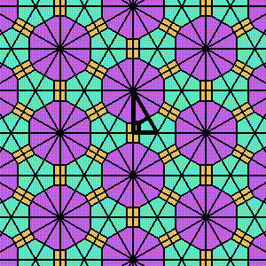
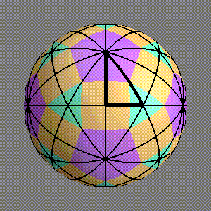
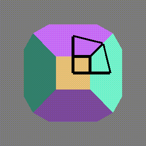
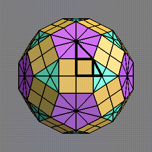

![[HOME]](museum_files/home.gif) The Geometry Center Home Page
The Geometry Center Home Page
geometry.pre-college, geometry.college, Fri, 17 Jun 1994
Geometry Center staff collaborated with the Science Museum of Minnesota to produce a museum exhibit on triangle tilings. Starting with a module for Geomview written by Charlie Gunn, staff members Tamara Munzner and Stuart Levy, with assistance from Olaf Holt, worked with exhibit developers at the museum to make software and explanations which are accessible and interesting to the general public. This is an especially difficult task at a museum; the average length of stay at the exhibit is only about five minutes. Despite this, the Geometry Center and museum collaborators managed to create an exhibit which contains sophisticated concepts such as tilings of the sphere and the relationship between tilings and the Platonic and Archimedean solids. Here is a brief description of the exhibit.
The sum of the angles of a planar triangle is always 180 degrees. Repeated reflection across the edges of a 30,60,90 degree triangle gives a tiling of the plane, since each angle is an integral fraction of 180 degrees. Figure 1 shows the exhibit's visualization of these ideas.
Figure 1

What about a triangle whose angles add up to more than 180 degrees? Such triangles exist on the sphere. Whenever the angles of such a spherical triangle are integral fractions of 180 degrees, repeated reflections across the edges give a tiling of the sphere. The exhibit shows this for triangles with the first two angles always 30 and 60 degrees, and the third angle selected as 45, 36, or 60 degrees. See figure 2.
Figure 2

A spherical triangle which tiles and a point of the triangle, called the bending point, uniquely determine an associated polyhedron as follows. Repeated reflection through the edges of the triangle gives a tiling of the sphere, each tile of which contains a reflected version of the bending point. These bending point reflections are the vertices of the associated polyhedron. The edges are chords joining each bending point and its mirror images. The faces are planes spanning the edges. Associated to the spherical triangle which tiles the sphere, there is a flattened triangle which tiles the polyhedron. The bending point is the only point of the flattened triangle which is still on the sphere. See figure 3. Also compare the spherical tiling with marked bending point in figure 2 with the associated polyhedron in figure 4.
Figure 3

Tilings of the sphere and polyhedra visually demonstrate the idea of a symmetry group. Each choice of angles for the base triangle selects a different symmetry group. Reflections across the edges of the base triangle are the generators of the group. In the language of group theory, the vertices are images of the bending point under the action of the group. The choices of group and bending point completely determine the polyhedron.
The exhibit software allows the viewer to move the bending point to see how the resulting polyhedron changes. For particular choices of bending point, the resulting polyhedra are Platonic and Archimedean solids. See figure 4. The software allows viewers to see the relationship between these polyhedra more easily than would a set of models. Using the mouse, viewers can watch the polyhedron change as they drag the bend point. Thus they can begin to understand the idea of duality of Platonic solids, as well as the idea of truncation to form Archimedean solids.
Figure 4

The triangle tiling exhibit is currently on view at the Science Museum of Minnesota. In addition to the software, the exhibit contains books and posters explaining the software, toys for constructing Platonic and Archimedean solids, and other gadgets useful for understanding the ideas of tilings of the sphere. For example, the exhibit includes a set of mirrored triangular tubes, each of which contains a spherical or flattened triangle. The mirrored walls make it appear as though inside each tube there is a sphere or a polyhedron. This gives a physical demonstration that repeated reflections of some spherical triangles tile the sphere, and repeated reflections of certain flattened triangles result in the Platonic and Archimedean solids.
The triangle tiling exhibit is successful with museum visitors; around 2500 people use it each week. In addition, the exhibit has been accepted for display at the annual meeting of the computer graphics organization SIGGRAPH. It will be part of graphics display called The Edge. (For more about SIGGRAPH, see Evelyn Sander, "SIGGRAPH Meeting," geometry.college, 17 August, 1993.)
This article is based on an interview with Tamara Munzner and a visit to the Science Museum of Minnesota. If you are interested in trying the software, which only works on an SGI, it can be downloaded from the Geometry Center's downloadable software libary. The software is also available by anonymous ftp from "ftp.geom.umn.edu" as tritile.tar.Z. The exhibit can easily be duplicated at other science museums. If interested, contact Munzner (munzner@geom.umn.edu).
As of February, 1995, this software is also available on the Macintosh. Here are the details:
Jeff Weeks has written a Macintosh version of the science museum math exhibit. The program is called KaleidoTile, and is available from the Geometry Center's downloadable software library, or via anonymous ftp from "ftp://geom.umn.edu/pub/software/KaleidoTile".
The Geometry Center Home Page
Comments to:
webmaster@www.geom.uiuc.edu
Created: June 17 1994 ---
Last modified: Jun 18 1996